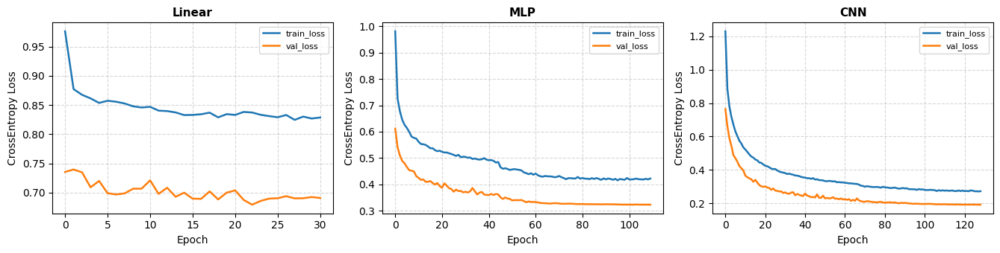
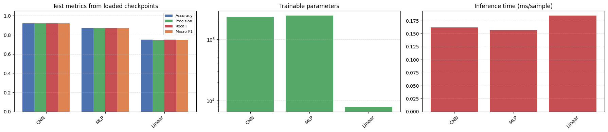
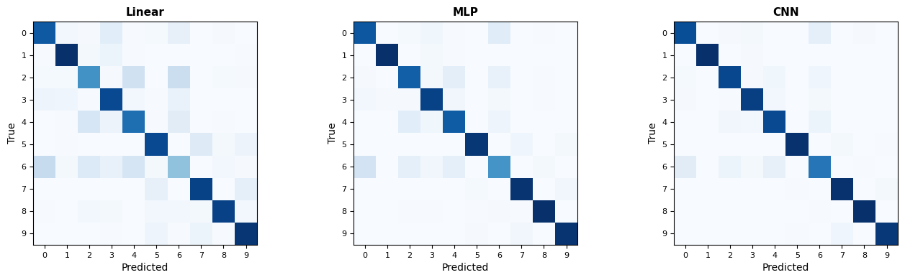
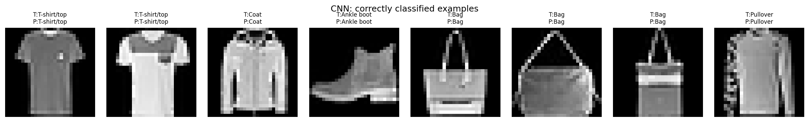
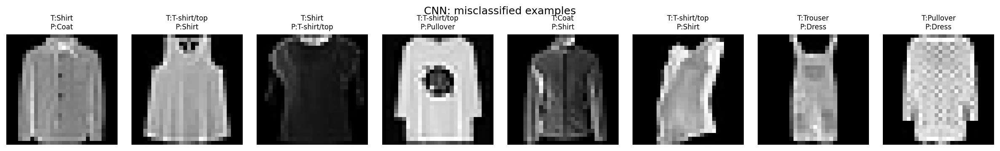

Assignment 1
Foundations of Deep Learning Pipelines and Architectures
From Linear Models to Modern Sequence Models: A Comparative Study for Image Classification
Instructor
Lê Thành Sách
Group members
Hoàng Xuân Bách · Nguyễn Việt Hùng · Lê Nguyễn Gia Phúc
Problem statement
Clothing-image recognition is a compact but meaningful example of visual perception. The ideal outcome of this assignment is not merely to obtain the highest test accuracy, but to understand how different neural-network families process the same visual evidence and to identify the trade-offs among predictive quality, computational cost, and inductive bias.
This is a predictive, multiclass single-label classification problem defined by the following core elements:
- Prediction unit: One individual Fashion-MNIST image.
- Input: A 28 × 28 grayscale clothing image.
- Output: Ten real-valued logits, one per clothing class (T-shirt/top, Trouser, Pullover, Dress, Coat, Sandal, Shirt, Sneaker, Bag, Ankle boot).
- Primary dataset: Fashion-MNIST.
By training and comparing these five architecture families under a common data split and evaluation protocol, observed differences can be attributed as fairly as possible to the model architecture and input representation.
Dataset description and EDA
Dataset description
Datasets, source and license
Two benchmarks from the MNIST family are involved. MNIST (handwritten digits) is used only while the pipeline is being built: checking DataLoader behavior, the forward and backward pass, and the evaluation metrics before any longer training run. It appears in none of the reported tables or figures. Fashion-MNIST is the primary dataset, and all five architectures (Linear/softmax, MLP, CNN, GRU/LSTM and Transformer) are trained, validated and tested on it with an identical split and evaluation protocol.
Fashion-MNIST was released in 2017 by Zalando Research (Han Xiao, Kashif Rasul and Roland Vollgraf) as a
drop-in replacement for MNIST. It keeps the 28 × 28 grayscale format, the 10 classes and the 60,000 /
10,000
train/test split, but was designed as a more challenging benchmark. It is distributed under the MIT
License (©
2017 Zalando SE) and hosted at github.com/zalandoresearch/fashion-mnist. We load the official release through
torchvision.datasets.FashionMNIST.
Collection and labeling
The images are product photos from Zalando's online catalog. The original high-resolution color studio shots went through automatic background removal, aspect-ratio-preserving resizing, centering and downsampling to 28 × 28 grayscale. Each image carries exactly one of 10 labels, taken from Zalando's product category hierarchy. Our team did no manual relabeling or label cleaning.
Format, counts and size
| Property | Value |
|---|---|
| Total samples | 70,000 (60,000 official train + 10,000 official test) |
| Raw sample format | 28 × 28, single channel, uint8 in [0, 255] |
| After ToTensor | float32 tensor of shape 1 × 28 × 28, values in [0.0, 1.0] |
| Annotation | One integer label y ∈ {0, …, 9} per image |
| Size on disk | ≈ 85.8 MB (raw torchvision directory) |
| License | MIT (© 2017 Zalando SE) |
Table 1 — Overview of Fashion-MNIST
The official sample counts in Table 2 follow the Fashion-MNIST release data.
| Label | Class | Official train pool | Official test metadata |
|---|---|---|---|
| 0 | T-shirt/top | 6,000 | 1,000 |
| 1 | Trouser | 6,000 | 1,000 |
| 2 | Pullover | 6,000 | 1,000 |
| 3 | Dress | 6,000 | 1,000 |
| 4 | Coat | 6,000 | 1,000 |
| 5 | Sandal | 6,000 | 1,000 |
| 6 | Shirt | 6,000 | 1,000 |
| 7 | Sneaker | 6,000 | 1,000 |
| 8 | Bag | 6,000 | 1,000 |
| 9 | Ankle boot | 6,000 | 1,000 |
| All classes | 60,000 | 10,000 |
Table 2 — Official sample-count metadata by class
Bias and limitations
- Catalog bias: every image comes from studio photography with even lighting, centered framing and clean frontal or side views. Results on this benchmark say little about consumer photos with clutter, odd angles or uneven light.
- Silhouette ambiguity: at 28 × 28, stitching, fabric weave, buttons and collars are mostly gone. T-shirt/top, Shirt, Pullover and Coat have very similar outlines, which is a built-in obstacle for linear and shallow models.
- Artificial class balance: each class holds exactly 10.0% of the data, whereas real retail catalogs are skewed toward some categories. The upside is that a weak result on one class cannot be blamed on too few examples of it.
Exploratory data analysis (EDA)
Data integrity
An integrity gate on the raw 70,000-image official training and testing pool verified matching
image/label counts,
uint8 pixel storage, valid labels from 0 to 9, and a consistent 28 × 28 single-channel shape.
No missing entries, non-finite values or shape inconsistencies were found.
Data splitting
After the integrity gate passed, the official 60,000-image training pool was split once with stratified sampling and seed 42 into an 80/20 train-validation split. This stratified partitioning enforces consistent class proportions across both splits.
Class Distribution
Figure 1 presents the class distribution after the canonical split. Stratification preserves exactly 4,800 training and 1,200 validation samples per class, so the standard deviation of class counts is zero within both development partitions. Since all classes are equally represented, the majority-class baseline accuracy is 10%. Because the dataset is balanced, overall accuracy provides a reliable summary of model performance. However, per-class F1 scores, Precision, Recall and confusion matrices are also reported to examine class-specific performance and identify common misclassification patterns. The confusion matrix is particularly useful for visually similar categories such as Shirt, T-shirt/top, Pullover, and Coat, as well as Sneaker and Ankle boot, because it shows which classes are most frequently confused with one another and how often these errors occur. This provides a clearer view of classification difficulties that may not be visible from overall accuracy alone.

Pixel intensity
Over the 48,000 × 28 × 28 = 37,632,000 pixels of the raw training split, the global statistics on the 0–255 scale are μraw = 72.99 and σraw = 90.06. The log-scale histogram in Figure 2 is strongly bimodal. Exactly 50.2% of all pixels are zero, which is the black background, and the remaining mass spreads over 1–255 and corresponds to the garment body, folds and surface texture.
| Label | Class | Mean intensity (0–255) |
|---|---|---|
| 0 | T-shirt/top | 82.85 |
| 1 | Trouser | 56.99 |
| 2 | Pullover | 96.49 |
| 3 | Dress | 66.12 |
| 4 | Coat | 98.10 |
| 5 | Sandal | 34.80 |
| 6 | Shirt | 84.83 |
| 7 | Sneaker | 42.84 |
| 8 | Bag | 90.17 |
| 9 | Ankle boot | 76.76 |
| All classes | 72.99 |
Table 3 — Mean raw pixel intensity by class, 48,000-image training split
Mean intensity per class (Table 3) works as a rough proxy for how much of the frame a garment fills. Sandal (34.80) and Sneaker (42.84) are lowest because of the wide empty margins around them. Pullover (96.49) and Coat (98.10) are highest, since they take up most of the frame. Total foreground area is therefore a low-level cue that even a linear model can use to separate footwear from apparel.
Sample inspection
Figures 3 and 4 show seven randomly selected images per class from the 48,000-image training split (sampling seed 42). Two patterns stand out. Some classes vary a great deal internally: Bag covers handbags, backpacks and clutches with different shapes and strap layouts, which calls for nonlinear decision boundaries. And T-shirt/top, Shirt, Pullover and Coat blur into each other. Low contrast and the absence of color or material cues make this group the most likely source of confusion-matrix errors, a hypothesis we revisit in the error analysis.


Data Preprocessing
Intensity scaling and zero-centered standardization: Raw pixel values span [0, 255] as
integers. As demonstrated in Figure 2, exactly 50.2% of all
pixels are zero (the black studio background), while the remaining 49.8% form a broad foreground mass
spanning 1 to 255. To eliminate numerical saturation and gradient instabilities, inputs are first scaled
to [0.0, 1.0] via torchvision.transforms.ToTensor() (which also introduces the channel
dimension to form a 1 × 28 × 28 tensor) and then standardized via channel-wise Z-score
normalization:
x̃ = (x - μ) / σ with μ = 0.2863, σ = 0.3532
Here, μ and σ are computed strictly on the 48,000-image training split, stabilizing gradient flow during backpropagation and speeding up convergence across all model backbones.
Asymmetric transformation pipeline: To balance regularization against deterministic evaluation integrity, the preprocessing pipeline is deliberately asymmetric between training and evaluation splits:
- Training pipeline (
train_transform):transforms.RandomRotation(degrees=(-10, 10)): Rotates the image randomly within ±10° to simulate minor natural hanging tilt and slight camera misalignment while keeping garments upright.transforms.RandomHorizontalFlip(p=0.5): Horizontally mirrors the image with 50% probability, exploiting the bilateral physical symmetry of most apparel and footwear (T-shirts, trousers, pullovers, sneakers) to double visual variety and enforce reflectional invariance.transforms.RandomCrop(size=28, padding=2): Pads the canvas by 2 zero-intensity pixels on all sides (matching the black studio background) and randomly crops back to 28 × 28, introducing subtle translation shifts of up to ±2 pixels to prevent models from overfitting to rigid center-pixel coordinate alignments.transforms.ToTensor(): Scales integer pixel intensities from [0, 255] to floating-point values in [0.0, 1.0] and reshapes the image into a channel-first tensor of shape(1, 28, 28).transforms.Normalize((0.2863,), (0.3532,)): Applies Z-score standardization computed strictly on the 48,000-image training split to center features around zero with approximately unit variance.
- Evaluation pipeline (
eval_transform): Validation is evaluated deterministically throughout training. After all development decisions and the checkpoint roster are fixed, the same deterministic pipeline is applied once to the official test set. Samples pass throughtransforms.ToTensor()followed bytransforms.Normalize((0.2863,), (0.3532,))using the training split's statistics.
Batching and architectural fairness: Preprocessed tensors are
grouped by custom PyTorch DataLoader instances into mini-batches of
batch_size = 128 for training (with random shuffle enabled) and batch_size = 256
for validation (without shuffle). The test DataLoader is constructed only in the final
evaluation stage, also with batch_size = 256 and no shuffle. All five candidate models
receive the exact same
tensor batch format of shape (B, 1, 28, 28). Any structural transformations required by
specific backbones — flattening into 784-dimensional vectors for Linear and MLP or patch projections
for Transformer — are executed internally
inside the respective model's forward pass. This guarantees that preprocessing remains a strictly
controlled, invariant baseline across all architectural comparisons.
Methodology
Pipeline overview
Pipeline overview diagram:
Mandatory models
| # | Model | Architecture | Input representation | Loss | Metrics | Strengths & limits | Params | Library vs. Self-implemented |
|---|---|---|---|---|---|---|---|---|
| 1 | Linear / softmax | Flatten 2D image into 784-dim vector (x.view(x.size(0), -1)) followed by a single
fully
connected layer nn.Linear(784, 10) computing affine transformation
z = W·x + b. Strictly returns raw unnormalized logits without intermediate hidden
layers,
activations, or softmax in forward pass.
|
Flattened 1D vector x ∈ ℝ⁷⁸⁴ (1×28×28 pixels) |
nn.CrossEntropyLoss |
• Primary: Top-1 Accuracy, Macro-F1 • Secondary: Macro-Precision, Macro-Recall, Test Loss • Class-level: Per-class Precision, Recall, F1, Confusion Matrix • Efficiency: Training time (sec), Inference latency (ms/sample) |
Strengths: Highly interpretable linear weights, minimal compute & memory
($O(1)$), convex loss surface. Limits: Severe underfitting; incapable of capturing non-linear interactions or spatial hierarchies. |
7,850 |
Self-implemented: LinearClassifier class & forward flattening
flow.Library: torch.nn.Linear, torch.nn.CrossEntropyLoss.
|
| 2 | MLP |
Deep feedforward network with 3 hidden dense layers (hidden_dims=(256, 128, 64),
dropout=0.3):• Linear(784, 256) → ReLU(inplace=True) → Dropout(0.3)• Linear(256, 128) → ReLU(inplace=True) → Dropout(0.3)• Linear(128, 64) → ReLU(inplace=True) → Dropout(0.3)• Output layer: Linear(64, 10) to 10 class logits.(Sequential dense stack without batch normalization, regularized via dropout). |
Flattened 1D vector x ∈ ℝ⁷⁸⁴ |
nn.CrossEntropyLoss |
• Primary: Top-1 Accuracy, Macro-F1 • Secondary: Macro-Precision, Macro-Recall, Test Loss • Class-level: Per-class Precision, Recall, F1, Confusion Matrix • Efficiency: Training time (sec), Inference latency (ms/sample) |
Strengths: Universal function approximator capable of non-linear decision
boundaries. Limits: Destroys 2D geometry upon flattening; lacks translation invariance; dense parameters prone to overfitting. |
242,762 |
Self-implemented: MLP class, dynamic layer construction, dropout
regularization.Library: torch.nn.Linear, torch.nn.ReLU,
torch.nn.Dropout, torch.nn.Sequential.
|
| 3 | CNN (self-designed) |
Custom 3-block ConvNet (SimpleCNN, no pretrained backbone) structured into feature
extractor and classifier head:• Features: – Block 1: Conv2d(1, 64, 3, pad=1) → BatchNorm2d(64) →
ReLU → MaxPool2d(2) (28→14) → Dropout2d(0.25)– Block 2: Conv2d(64, 128, 3, pad=1) → BatchNorm2d(128) →
ReLU → MaxPool2d(2) (14→7) → Dropout2d(0.25)– Block 3: Conv2d(128, 128, 3, pad=1) → BatchNorm2d(128) →
ReLU (7×7 feature maps) → Dropout2d(0.3)• Classifier: AdaptiveAvgPool2d(1) → Flatten() →
Linear(128, 64) → ReLU(inplace=True) → Dropout(0.3) →
Linear(64, 10).
|
2D spatial tensor (B, 1, 28, 28) preserving image coordinate grid |
nn.CrossEntropyLoss |
• Primary: Top-1 Accuracy, Macro-F1 • Secondary: Macro-Precision, Macro-Recall, Test Loss • Class-level: Per-class Precision, Recall, F1, Confusion Matrix • Efficiency: Training time (sec), Inference latency (ms/sample) |
Strengths: Strong spatial inductive bias (locality & translation
equivariance);
multi-stage 2D dropout and batch normalization prevent overfitting. Limits: Slower training per batch than MLP; fixed receptive field determined by kernel size and depth. |
231,626 |
Self-implemented: Complete custom ConvNet architecture (SimpleCNN,
no
pretrained backbone).Library: torch.nn.Conv2d, torch.nn.BatchNorm2d,
torch.nn.MaxPool2d, torch.nn.Dropout2d,
torch.nn.AdaptiveAvgPool2d,
torch.nn.Flatten, torch.nn.Dropout, torch.nn.Linear.
|
| 4 | LSTM or GRU |
Under development
Architecture, input representation, parameters, and evaluation are currently in progress.
|
||||||
| 5 | Transformer |
Under development
Vision Transformer patch tokenization, attention layers, and evaluation are currently in
progress.
|
||||||
Experimental setup
To ensure strict experimental fairness, all models were trained under a unified, identical protocol. The hyperparameters, optimization policies, and execution environment are detailed below:
| # | Setup / Hyperparameter | Value / Policy | Design Rationale & Protocol Notes |
|---|---|---|---|
| 1 | Optimizer | torch.optim.Adam |
Uniform optimizer family applied across all architectures |
| 2 | Learning rate | Initial lr = 1e-3 (0.001); minimum min_lr = 1e-6 |
Standard robust baseline for Adam on normalized Fashion-MNIST pixel tensors; dynamically reduced upon plateauing. |
| 3 | Batch size | 128 |
Constant across train_loader, val_loader, and test_loader
(with drop_last=False and num_workers=2). Balances gradient estimation
stability with GPU throughput. |
| 4 | Epochs | Maximum 200 epochs (governed by early stopping) |
Upper bound ensuring complete convergence. Actual epochs executed before early stopping trigger: Linear = 38 epochs, MLP = 104 epochs, CNN = 86 epochs. |
| 5 | Scheduler | ReduceLROnPlateau(mode="min", factor=0.5, patience=3, threshold=1e-4) |
Monitors validation loss; decays learning rate by 50% when validation loss doesn't improve for 3 consecutive epochs, enabling fine-grained convergence near local minima. |
| 6 | Regularization |
• Linear: None (unregularized baseline). • MLP: Dropout(p=0.3) after each hidden ReLU layer.• CNN: BatchNorm2d across all conv blocks + spatial
Dropout2d(0.25, 0.3) in conv features + Dropout(p=0.3) in classification
head.
|
Prevents co-adaptation of hidden features and mitigates overfitting, with Batch Normalization providing additional implicit regularization. |
| 7 | Early stopping | patience = 8 epochs
|
Automatically ends the training if val_loss < best_val_loss is not achieved
within 8 consecutive epochs, saving computation and mitigating late-stage over-adaptation. |
| 8 | Checkpoint criterion | Minimum Validation Loss (best_val_loss) |
The exact model state (state_dict) yielding the lowest validation loss is
deep-copied
in memory and persisted to Google Drive (CKPT_DIR). Automatically restored for final
test
evaluation. |
| 9 | Seed | SEED = 42 |
Deterministic random seed set across random.seed(42),
numpy.random.seed(42), torch.manual_seed(42), and
torch.cuda.manual_seed_all(42) to ensure bit-exact reproducibility.
|
| 10 | Hardware | NVIDIA Tesla T4 GPU (15,360 MiB VRAM), Google Colab instance | OS: Linux 6.6 x86_64, PyTorch 2.11.0+cu128, Python 3.13.15. Device accelerated via CUDA
(device = "cuda"). |
| 11 | Mixed precision | Not used (Standard Single Precision FP32 across all models) | Guarantees deterministic arithmetic, prevents numerical underflow in lightweight models, and enables unskewed inference latency benchmarking. |
| 12 | Training time |
• Linear: ~1,142.2 s (~19.0 min) • MLP: ~1,845.3 s (~30.8 min) • CNN: ~1,811.7 s (~30.2 min) |
Wall-clock execution time measured from initialization through early stopping trigger on identical hardware under GPU acceleration. |
| 13 | Hyperparameter selection method | Matched parameter budget target (~230K–245K params) & manual tuning | Layer dimensions and channel capacities were systematically sized to adhere to a matched capacity range (~230K–245K parameters; MLP: 242,762; CNN: 231,626) to enable fair, rigorous comparison across architectural families under comparable representation capacity. Optimization hyperparameters (learning rate, batch size, scheduler) were held strictly uniform across models. |
Results
The analysis covers training convergence behavior, quantitative metrics (primary/secondary metrics, compute cost, and per-class breakdown), and qualitative prediction diagnostics.
1. Training behavior & learning curves
Training and validation loss and accuracy trajectories over epochs were continuously monitored to diagnose convergence rates, optimization stability, and the onset of overfitting or underfitting:

Figure 1: Training and validation loss/accuracy learning curves across epochs for Linear Classifier, MLP, and SimpleCNN on Fashion-MNIST under Adam optimization and ReduceLROnPlateau scheduling.
- Linear Classifier: Rapidly converged within ~19–38 epochs before triggering early stopping. The lack of hidden layers severely restricts the hypothesis space to simple linear hyperplanes.
- Multilayer Perceptron (MLP): Exhibited smooth convergence with validation loss
steadily
decreasing. The
Dropout(p=0.3)layers effectively curbed the generalization gap, preventing over-memorization of training samples across 242,762 dense parameters. Learning rate decayed upon plateaus to achieve87.20%test accuracy. - Convolutional Neural Network (CNN): Demonstrated superior optimization dynamics and
the
lowest validation loss. Batch Normalization stabilized internal covariate shifts,
allowing
steady gradient flow, while spatial
Dropout2dand pooling preserved high representation generalization, reaching92.08%accuracy without observable late-stage divergence. - Checkpoint Selection: The exact model weights corresponding to the minimum validation
loss
(
best_val_loss) were successfully preserved and restored for testing
2. Quantitative results & metric comparison
Summary comparison across primary and secondary metrics, parameter counts, inference latency, and training execution times on the 10,000-sample Fashion-MNIST test set (evaluated strictly on saved checkpoints):
| # | Model | Params | Test Acc | Macro-Prec | Macro-Rec | Macro-F1 | Test Loss | Latency | Training Time |
|---|---|---|---|---|---|---|---|---|---|
| 1 | Linear / Softmax | 7,850 |
74.98% | 74.49% | 74.98% | 74.62% | 0.7125 | 0.1845 ms | 10m 18.9s |
| 2 | MLP | 242,762 |
87.20% | 87.06% | 87.20% | 87.08% | 0.3493 | 0.1590 ms | 36m 52s |
| 3 | CNN ★ Best | 231,626 |
92.08% | 92.02% | 92.08% | 92.03% | 0.2185 | 0.1623 ms | 44m 1.5s |
| 4 | LSTM / GRU | Under development | |||||||
| 5 | Transformer (ViT) | Under development | |||||||

Figure 2: Multi-metric performance comparison across Accuracy, Precision, Recall, Macro-F1, Parameter Count, and Inference Latency.
Per-class precision, recall, and F1-score breakdown
Performance evaluation across each individual garment and footwear category (1,000 test items per class):
| ID | Class Name | Linear Precision | Linear Recall | Linear F1 | MLP Precision | MLP Recall | MLP F1 | CNN Precision | CNN Recall | CNN F1 |
|---|---|---|---|---|---|---|---|---|---|---|
| 0 | T-shirt/top | 0.7221 | 0.7640 | 0.7425 | 0.7917 | 0.8250 | 0.8080 | 0.8636 | 0.8740 | 0.8688 |
| 1 | Trouser | 0.8918 | 0.9070 | 0.8994 | 0.9878 | 0.9730 | 0.9804 | 0.9920 | 0.9880 | 0.9900 |
| 2 | Pullover | 0.6351 | 0.5640 | 0.5975 | 0.7847 | 0.7980 | 0.7913 | 0.8919 | 0.8990 | 0.8954 |
| 3 | Dress | 0.7288 | 0.8170 | 0.7704 | 0.8581 | 0.9010 | 0.8790 | 0.9209 | 0.9310 | 0.9259 |
| 4 | Coat | 0.6509 | 0.6880 | 0.6689 | 0.7797 | 0.8070 | 0.7931 | 0.8609 | 0.8910 | 0.8757 |
| 5 | Sandal | 0.8175 | 0.8150 | 0.8162 | 0.9682 | 0.9430 | 0.9554 | 0.9899 | 0.9780 | 0.9839 |
| 6 | Shirt (Hardest) | 0.4405 | 0.3700 | 0.4022 | 0.6950 | 0.5970 | 0.6423 | 0.7774 | 0.7230 | 0.7492 |
| 7 | Sneaker | 0.8231 | 0.8420 | 0.8324 | 0.9254 | 0.9550 | 0.9400 | 0.9432 | 0.9790 | 0.9607 |
| 8 | Bag | 0.9156 | 0.8460 | 0.8794 | 0.9641 | 0.9660 | 0.9650 | 0.9860 | 0.9890 | 0.9875 |
| 9 | Ankle boot | 0.8233 | 0.8850 | 0.8530 | 0.9512 | 0.9550 | 0.9531 | 0.9765 | 0.9560 | 0.9661 |
3. Qualitative results & prediction diagnostics
To investigate model behaviors beyond aggregated scalar numbers, we examined full confusion matrices and individual test instance predictions:

Figure 3: test set confusion matrices across the 10 Fashion-MNIST categories.

Figure 4: Correctly classified test samples (Ground Truth vs. Predicted label).

Figure 5: Failure analysis: challenging misclassified test samples.
Comparison and discussion
Error analysis
Limitations and conclusion
AI usage — this assignment
Assignment-specific AI Usage Disclosure
Where AI was used
Where AI was NOT used
Links
| Content | Link |
|---|---|
| Source code (Assignment 1) | GitHub repository |
| EDA; Dataset/DataLoader; train/val loop; Linear + MLP + CNN runnable w | Jupyter Notebook |